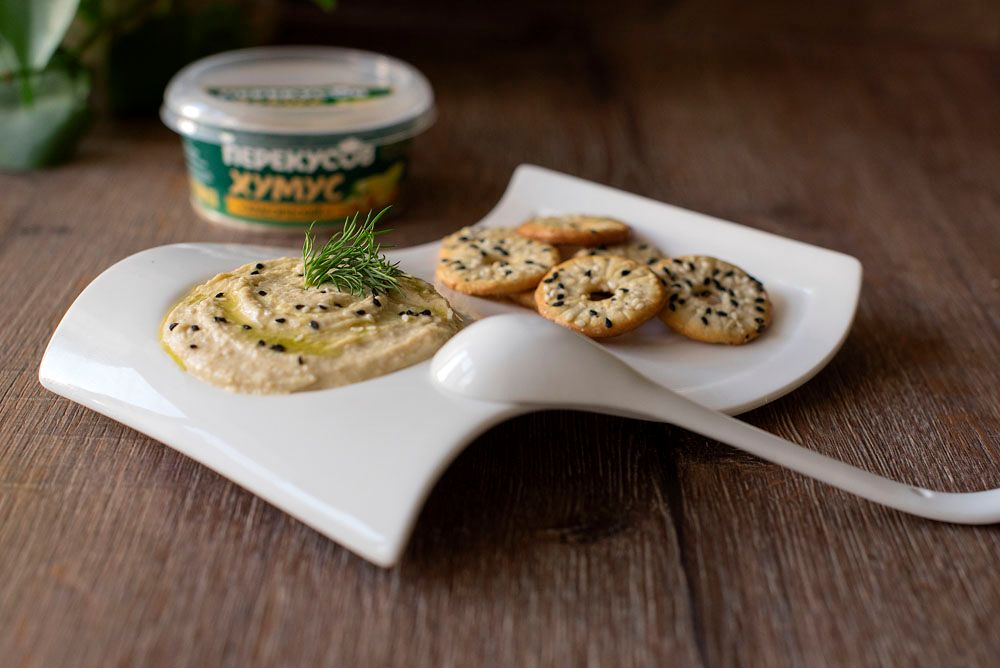
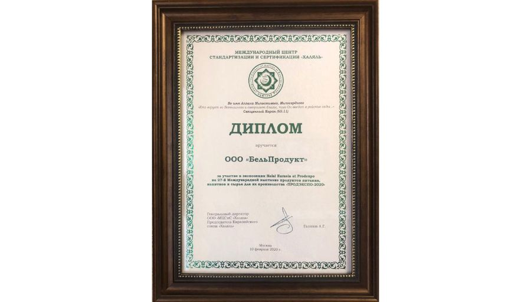
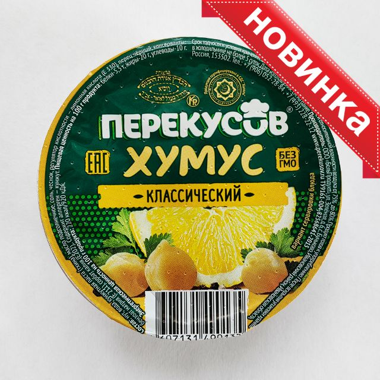
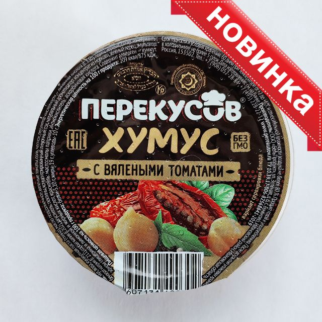
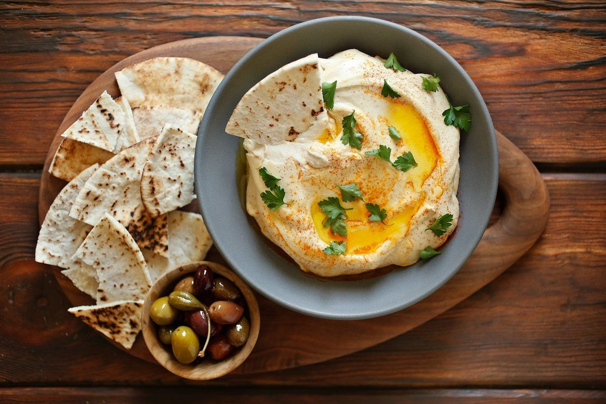

Собственное производство в Ивановской области
Варим нут, делаем хумус и отгружаем на РЦ сами — от сырья до полки.
мощность производства в месяц
до распределительных центров Москвы
вкусов в основной линейке
система безопасности пищевой продукции
Как мы работаем
Компания зарегистрирована в 2007 году, с 2009 года работает собственное производство в Ивановской области. Площадка находится вдали от промышленных центров, без вредных производств по соседству.
- Площадка в с. Буньково, Ивановская область
- Мощность 30 т в месяц, свободный резерв под новые контракты
- Система менеджмента безопасности ISO 22000, принципы ХАССП
- Выпуск по ТУ 9161-004-82568641-2015
- Холодовая цепь +2…+6 °C от линии до РЦ

Документы и качество
ISO 22000
Сертифицированная система безопасности пищевой продукции.
ТУ и декларация
ТУ 9161-004-82568641-2015, соответствие ТР ТС 021/2011.
Протоколы
Протоколы испытаний — по запросу технолога.
Аудит
Приглашаем технологов сетей на производство.
Галерея




Фото — с действующего сайта perekusov.ru. Съёмка линии производства — по плану фотосессии.
Производство в 300 км и склад у Москвы
- Производство: с. Буньково, Ивановская область — 300 км до Москвы
- Склад: г. Долгопрудный, Лихачёвский проезд, 20А — рядом с Москвой
- Рефтранспорт +2…+6 °C до РЦ сетей и клиентов HoReCa
- Остаточный срок при приёмке — с запасом к требованиям сетей
Склад: Московская обл., г. Долгопрудный, Лихачёвский проезд, 20А · Открыть в Яндекс.Картах